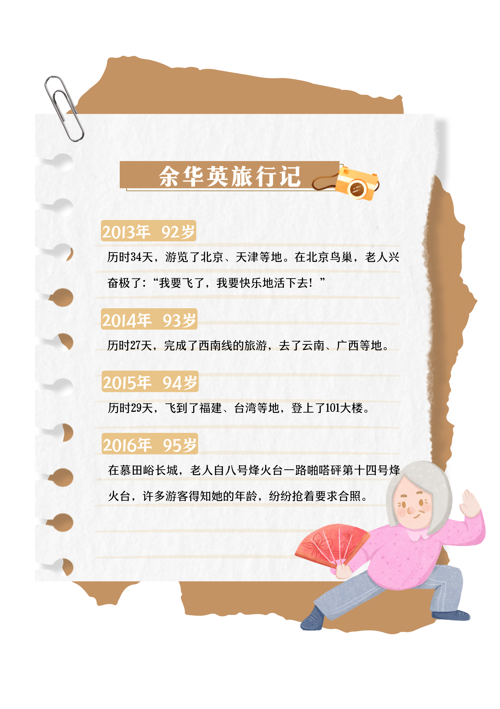

子女关爱父母，在一定程度上会更加重视他们的身体健康，更愿意帮助他们购买基本的医疗保险，这不仅能提升老年人的幸福感，也能破解老年人落入诈骗陷阱的难题。该不该给老年人买保险一直是网上热议的话题，其实归根结底，不是不能给父母买保险，而是不要让父母自己买保险，毕竟年龄比较大了，很容易上当受骗。
数据显示，2017年1月至2022年1月，北京一中院审理诈骗案532件，涉诈骗老年人案件40件，占7.5%，诈骗老年人案件数量呈上升趋势。而近五年来，该院审理的“骗老案”涉及领域包括养生保健、投资理财、文物收藏等，其中涉及养生保健领域的案件占42.5%。其中大多数案件是向老年人高价售卖三无保健品，或以帮忙办理保健品退费的名义行骗，还有的虚构老年人有疾病的事实，推销昂贵的养生服务项目，骗取老年人钱款，数额较大。而案发时钱款早已被犯罪分子挥霍或隐匿，追赃挽损困难，给老人及其家庭造成了严重的经济损失。可见，老年人群体对健康的急迫需求和该群体的易骗性之间存在着剧烈的冲突。
2021年，国家医保局待遇保障司推出了一个新的机制，对个人账户使用范围进行拓展，参加职工医保的子女们的个人账户可以给自己的父母使用，实行家庭范围内的共济，这在一定程度上加强了父母与子女的联系，削弱老年人群体易骗性造成的影响。
家住合肥的余华英老人，今年已经102岁了，她热爱锻炼，作息也很规律：7点起床，上午进行一次户外活动，中午定时午休，下午也有一次户外活动。子女们评价她为“闲不住的人儿”，而这位闲不住的老人酷爱旅行，家里的墙上挂满了旅拍，足迹遍布祖国大地。

余华英的旅行日记让人不得不佩服老人家的身体状态。当然，这也与子女们的精心照顾密不可分。2010年，老人曾遭遇了一场车祸，孝顺的子女们轮流护理，一年后，老人的身体便恢复如初。老人说自己很幸福，未来她还想多出去走走，看看祖国的大好河山。
除了基本的医疗保险外，老年人的照护需求也亟待满足。上述余华英老人所在的街道、社区的工作人员也时常上门探望，定期为余华英做体检。根据CGSS2021中有关互联网医疗及家庭照顾需求问题的数据，对于“过去 12 个月，您通过各种形式上网为自己或他人搜索关于健康或医疗方面信息的频繁程度如何？”这个问题，大多数老人给出的是“我从不上网”的答案。
而对于“12 个月，互联网上的信息对我的健康行为产生了积极的影响/过去 12 个月，互联网上的信息帮助我理解医生告诉我的事情/互联网可以有助于人们判断自己是否需要去看医生/互联网有助于确认医生是否给了人们适当的建议”这些问题，他们却大多肯定了互联网医疗的实用性，一定程度上反映了行为与认知之间的错位。老年人群体作为互联网时代下的的“数字弃民”，他们表达出了对健康、医疗照护的“狂热”追求，却无法良好地掌握新兴的互联网便捷工具来满足自身需求。
那么，老年人生活照料服务究竟该由谁买单？近年来提出的“医养结合”便是这个问题的答案。一方面，政府精准用好用活公共财政资源和保险资金。考虑不同老年人的保障需求，提供有针对性的生活补贴。特别对空巢、高龄等困难老人群体，设立特殊津贴制度，兜住底线，确保安全。同时强化城乡居民医疗保险保障力度。针对经济、生活困难的农村空巢老人，要提高重大疾病、大医院和外地医院的医药费用报销比例。《2022年民政事业发展统计公报》显示，截至 2022 年底，全国共有 4143.0 万老年人享受老年人补贴，其中享受高龄补贴的老年人 3406.4 万人，享受护理补贴的老年人 94.4 万人，享受养老服务补贴的老年人 574.9 万人，享受综合补贴的老年人 67.4 万人。全国共支出老年福利资金 423.0 亿元，养老服务资金 170.1 亿元。
近年来，合肥市持续提升老年人福利，拓展居家养老服务内容也让广大老年人更有幸福感。在高龄津贴方面，自2021年1月1日起，合肥市建立高龄津贴动态调整机制，并连续两年提高高龄津贴标准。现行标准为：80-89周岁高龄津贴每人每月120元；90-99周岁高龄津贴每人每月240元；100周岁以上高龄津贴每人每月600元。2023年以来，全市发放年度高龄津贴总计2.78亿元，超过24万名老年人享受高龄津贴。
另一方面，政府需要统筹居家、社区和机构的信息与资源，化零为整，做到信息共享、资源共享、服务定制。推动医疗卫生服务延伸至社区和家庭，促进基层医疗卫生机构与社区居家养老相结合，提供连续的健康管理服务和居家医疗服务。据中国消费者协会的《2022年养老消费调查项目研究报告》显示，居家养老是大多数老人的首选养老方式，他们对于康复护理等医疗服务的需求达到了22.6%，需求较高。
此外，对于畅通医疗保障服务信息交互渠道的问题，不少机构都交出了满意的答卷。如山东省利津县医疗保障局设立了老年人办理业务绿色通道，开通了“老年人优先办理窗口”，设置了“爱心专座区”，制作了通俗易懂的宣传折页和明白纸，配备了医药箱、老花镜、放大镜等方便老年人及特殊群体办事的设施设备，让老年人在办理医保业务的过程中也能享有更多获得感、幸服感、安全感。
政府兜底的同时，也为养老产业留出空间。专家指出，发展健康持续的医养结合产业，需要提振市场有效需求，其核心是老人和家属以及社会提供的支付能力。但是这种长期照护的成本，让单个家庭长期来承受是很大的负担。因此，未来需要在完善作为第一支柱的基本养老保险制度基础上，积极发展第二支柱的企业补充养老保险和职业年金及发展第三支柱的商业性养老保险计划，如商业长期护理保险等多种老年护理保险产品，满足老年人护理保障需求。
人口老龄化背景下老年人基本养老保险参保行为的影响因素——基于2015年CGSS数据的实证分析
基本医疗保险对国民幸福感的影响研究 - 中国知网 (cnki.net)
国务院关于印发“十四五”国家老龄事业发展和养老服务体系规划的通知_其他_中国政府网 (www.gov.cn)
2021年度国家老龄事业发展公报_服务信息_中国政府网 (www.gov.cn)
中国人口老龄化：未来挑战与应对策略 (qq.com)
老年公平在中国中文版-确认印刷版.pdf (unfpa.org)
人口专家：中国正式步入老龄社会 社会发展将产生六大变化_澎湃号·媒体_澎湃新闻-The Paper
我国预计2035年左右进入重度老龄化阶段 60岁及以上老年人口将突破4亿--健康·生活--人民网 (people.com.cn)
年轻人要攒够多少钱，老了才敢生病？ (qq.com)